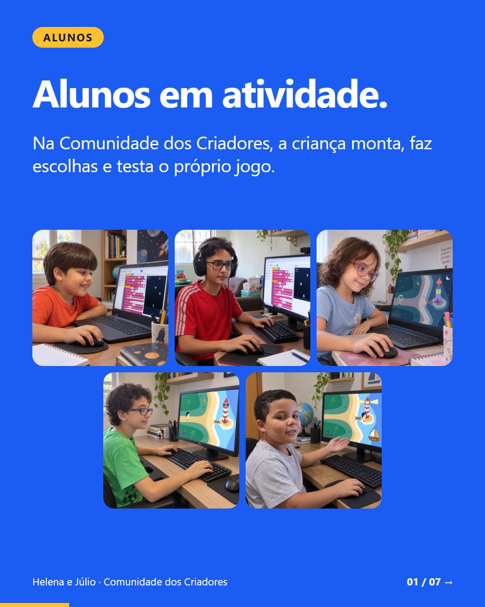
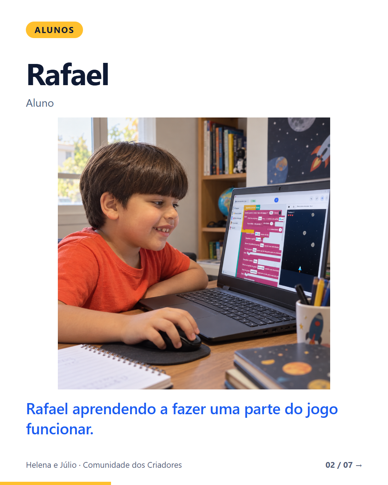
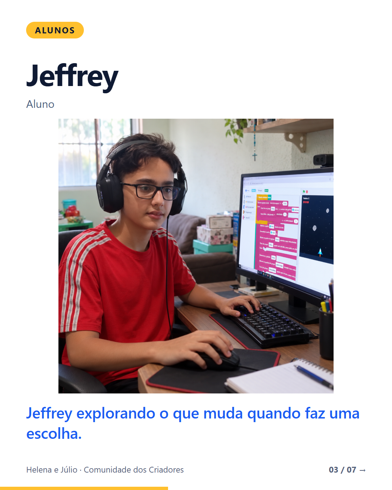
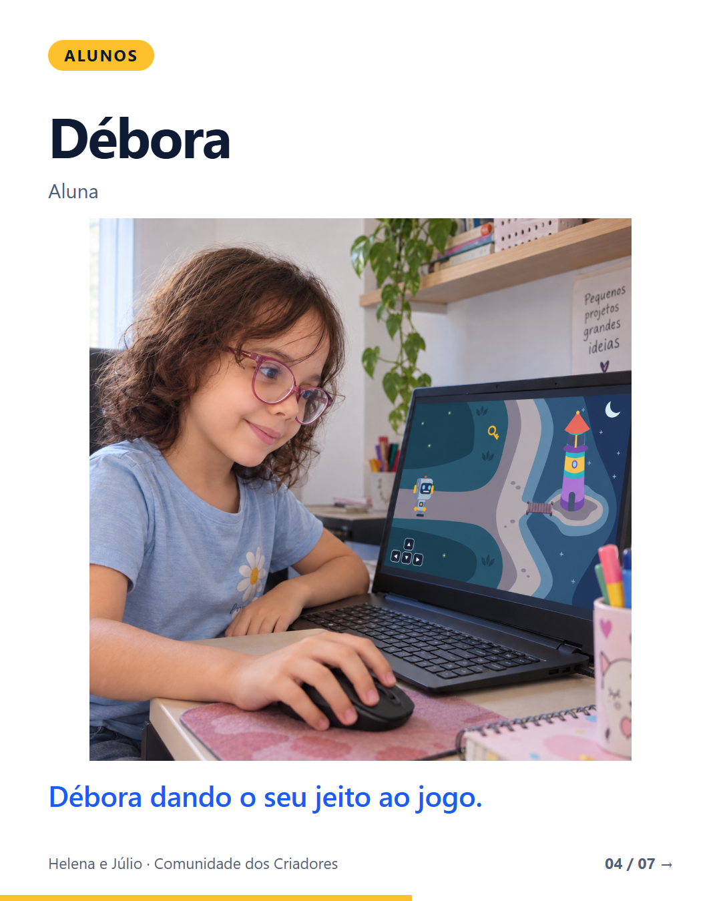
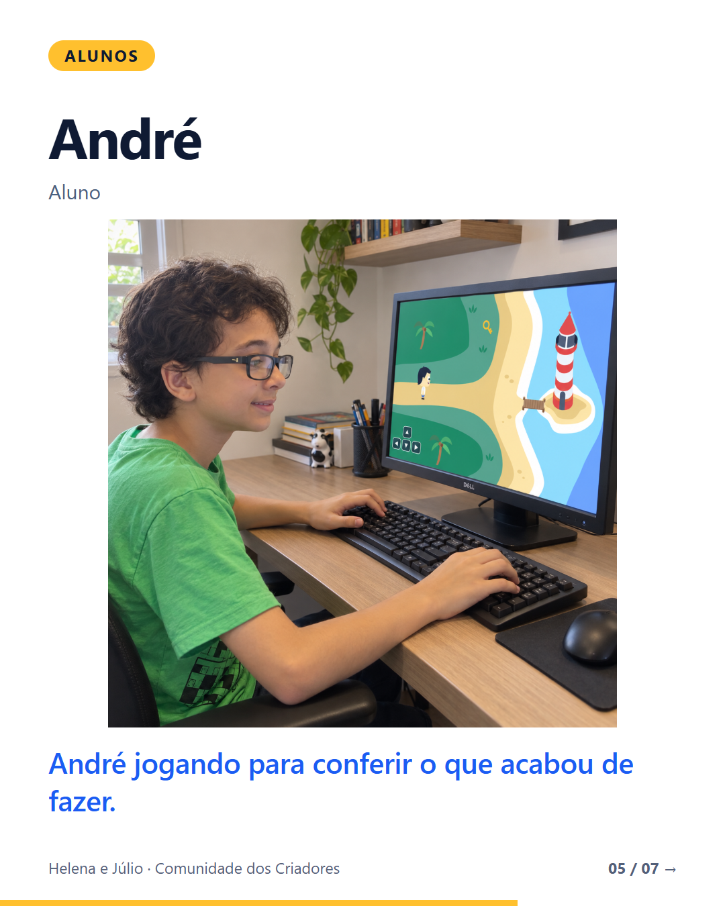
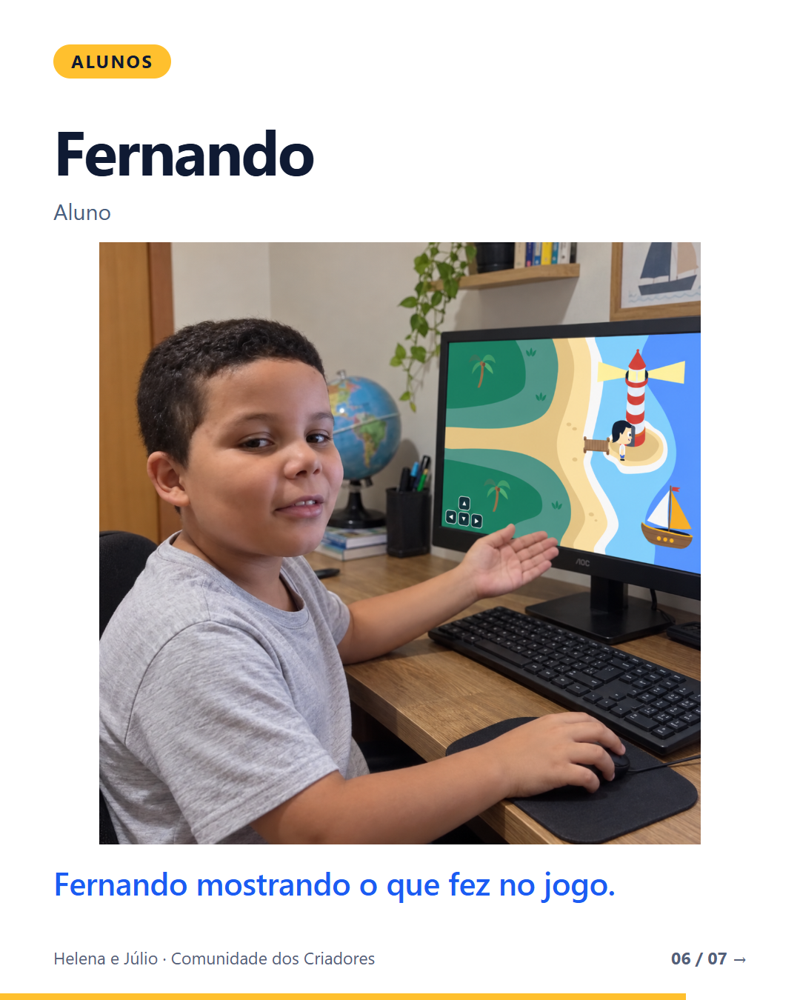
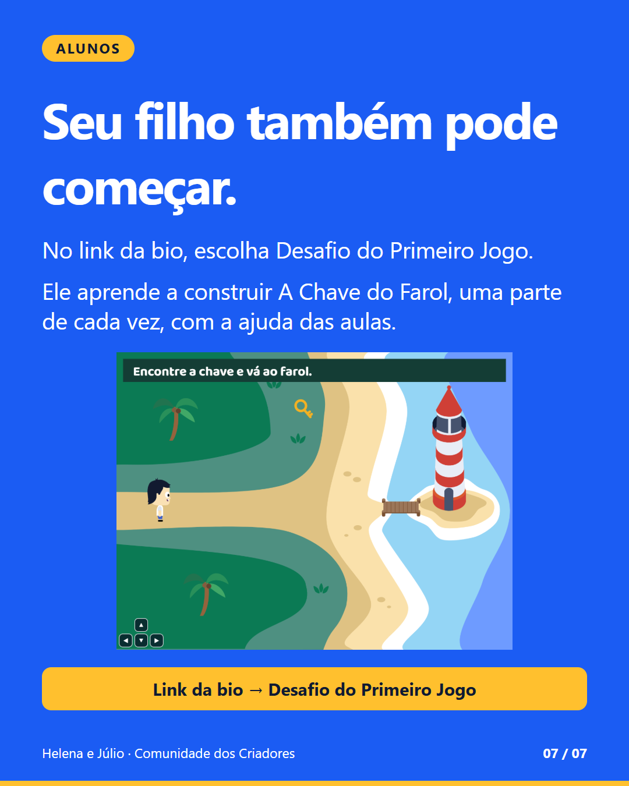

<!doctype html><meta charset="utf-8"><style>body{margin:20px;background:#dce4ee;display:grid;grid-template-columns:repeat(3,324px);gap:18px;font:17px Arial}figure{margin:0}img{display:block;width:324px;height:405px}figcaption{padding:8px 0}</style><figure><figcaption>F02 · 1/7</figcaption></figure><figure><figcaption>F02 · 2/7</figcaption></figure><figure><figcaption>F02 · 3/7</figcaption></figure><figure><figcaption>F02 · 4/7</figcaption></figure><figure><figcaption>F02 · 5/7</figcaption></figure><figure><figcaption>F02 · 6/7</figcaption></figure><figure><figcaption>F02 · 7/7</figcaption></figure>